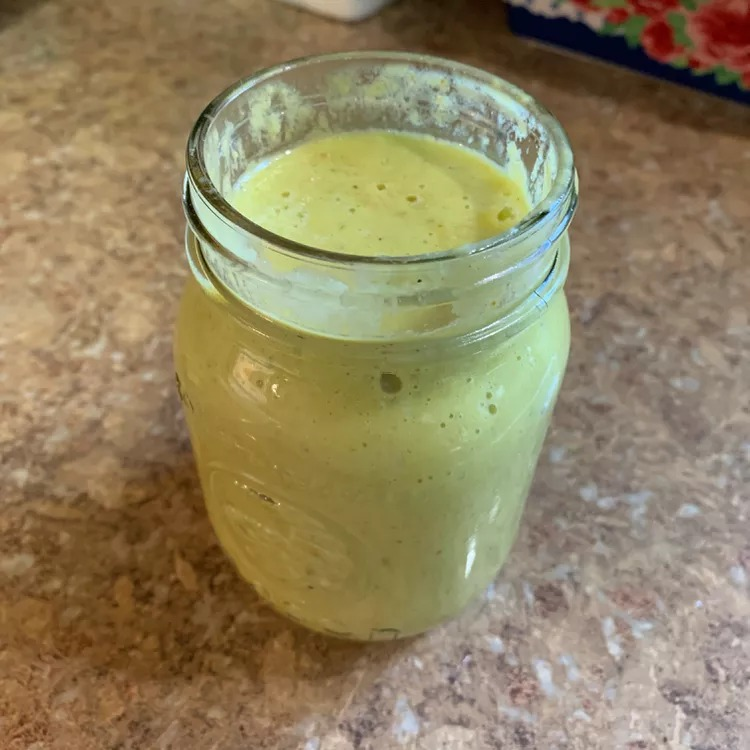

Hot Pepper Sauce - A Trinidadian Staple

A green pepper sauce. Delicious!
A quick and simple hot sauce to go along with your dishes.
Run from those randomly hot ones and try out this seasoned pepper sauce.
Ingredients
- 15 habanero peppers
- 1 small mango - peeled, seeded and cut into chunks
- 1 onion, roughly chopped
- 3 green onions, roughy chopped
- 2 cloves garlic, roughly chopped
- 1½ cups distilled white vinegar
- 2 limes, juiced
- 2 tablespoons vegetable oil
- 4 tablespoons dry mustard powder
- 1 tablespoon salt
- 1 teaspoon curry powder
- ½ teaspoon grated lime zest
Directions
- Wearing disposable gloves, and being careful not to get any in your eyes or on your skin, roughly chop the habanero peppers.
- Place the habanero peppers, mango, onion, green onions, and garlic into a blender.
- Pour in the vinegar, lime juice, and vegetable oil, cover the blender, and pulse until the mixture is very finely chopped.
- Stop the blender, and add dry mustard powder, salt, curry powder, and lime zest. Blend again until the sauce is smooth.
- Pour into clean jars, and store in refrigerator.